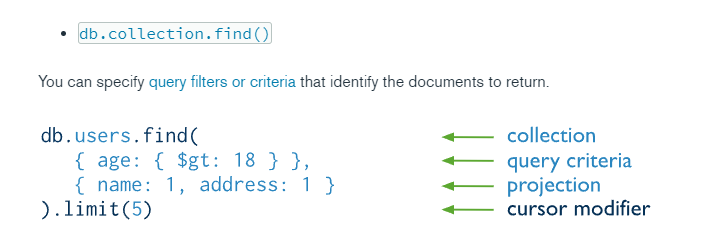

Read Operation

We use db.collection.find() when we want to print all data in the collection. It also accepts 2 parameter and they are the query and the projection. Projection specify the exact document you want to be printed out, such as when db.collection.find({age: 1}), will print out the document containing the age of 1. Projection in the other hand specifies the return value, in here we can specify what exactly to be printed in the console, from the example above, they only want to print name and address (0 means false, 1 means print)

In the above example, I mispelled my id name creating an auto generated ObjectId to the _id key.

$ gt means greater than.